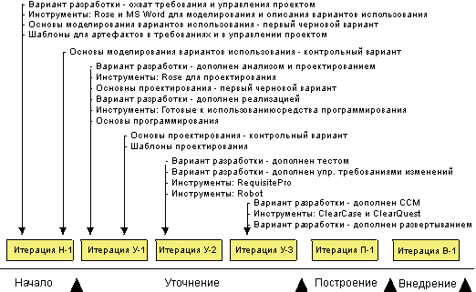
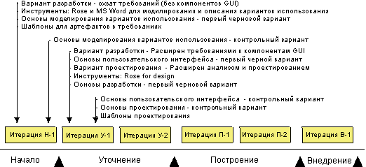
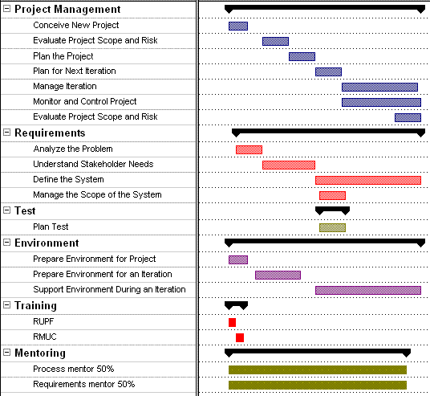

|
Данные рекомендации содержат информацию о реализации процессов и инструментов в проекте разработки программного
обеспечения путем выполнения операций дисциплины Управление средой. Здесь также обсуждается дисциплина
Управление проектом, в которой рассматриваются вопросы планирования проекта, идентификации рисков, управления проектом,
мониторингом и контролем хода его выполнения.
Важно понимать, что процессы и инструменты могут быть реализованы различными способами (см. раздел "Подходы к реализации процессов и инструментов". Оптимальный
подход зависит от текущего состояния проекта и особенностей организации, поэтому необходимо проводить оценку состояния
и того, и другого (см. Рабочий продукт: Оценка организации, занимающейся разработкой).
В данном разделе обсуждаются несколько различных подходов к реализации процесса в проекте. Кроме того, в разделе
Концепция: Организация среды приведены сведения об общих принципах организации среды
для проектов по разработке программного обеспечения. Дополнительные сведения об адаптации процесса к
проекту можно найти в разделе Тонкая настройка
RUP.
Эти общие рекомендации распространяются почти на все проекты:
-
Перед началом проекта: перед началом проекта необходимо обучить разработчиков процесса, специалистов по
инструментам и руководителей проектов процессу Rational Unified Process (RUP). Это крайне важно для общего успеха
проекта. Если члены проектной группы не знают, что им нужно делать, скорее всего, проект закончится неудачно.
-
Начальный этап: на этом этапе основное внимание обычно уделяется пониманию того, как можно оптимизировать
управление требованиями (дисциплина Управление требованиями) и как следует организовать управление проектом
(дисциплина Управление проектом).
-
Этап уточнения: к концу этапа уточнения должны быть готовы все процессы и инструменты. Важнейшая часть этого
этапа часто заключается в организации управления конфигурацией и изменениями, поскольку на этапе построения
продукта работа будет распараллелена между командами разработчиков.
-
Этап построения: на этом этапе не вводятся новые процессы и инструменты. Здесь главное внимание уделяется
созданию продукта, поэтому среда разработки должна быть стабильной. Одна из важнейших задач этапа построения
заключается в том, чтобы обеспечить эффективное подключение новых сотрудников к работе.
-
Этап поставки: не вводятся новые процессы и инструменты. На этапе поставки основное внимание перемещается с
оптимизации компонентов процесса, относящихся к проекту, на проведение заключительных совещаний, систематизацию
полученного опыта и сохранение итоговой информации для использования в следующих проектах. Опыт, полученный
при реализации проекта, применяется для оптимизации процесса и инструментов для создания следующей версии продукта.
Разные организации по-разному относятся к процессу. Некоторые из них пользуются очень зрелыми процессами и создают
специальные группы сотрудников, занимающиеся централизованной оптимизацией и внедрением процесса в рамках всей
организации. Некоторые организации беспокоятся только о настройке процесса для выполнения конкретных проектов.
Подход к настройке процесса для проекта сильно зависит от общего отношения организации к процессу и нескольких других
факторов. Пример:
-
Зрелость процесса в организации, занимающейся разработкой программного обеспечения.
-
Размер проекта в терминах календарной продолжительности и количества занятых разработчиков.
-
Опыт участников проекта в реализации аналогичных процессов.
-
Требования к степени формальности проекта.
Дополнительные сведения о факторах, влияющих на внедрение процесса, можно найти в разделе Рекомендации: Дискриминанты процесса.
Ниже перечислены основные подходы к внедрению процессов и инструментов в проекте по разработке программного
обеспечения:
-
" Изменить все". Это значит, что в проект внедряется полный набор компонентов
RUP и новых инструментов.
-
" Оптимизировать процессы и инструменты". В рамках проекта будут
оптимизированы отдельные компоненты процесса и отдельные инструменты. Это будет сделано за счет внедрения отдельных
составляющих процесса RUP и инструментов поддержки.
Решение о том, сколько компонентов RUP и сколько новых инструментов нужно внедрить в проекте, зависит от ряда факторов.
Эти факторы описаны в разделе Рекомендация: Дискриминанты процесса. Данные факторы обычно выявляются при
оценке проекта и реализующей его организации. Сведения об этом приведены в разделе Рабочий продукт: Оценка организации, занимающейся разработкой.
Решение о полном переходе на RUP и совершенно новый набор инструментов может быть принято по разным причинам:
-
В настоящий момент не применяются никакие инструменты и никакой процесс, а проект нуждается как в полном процессе,
так и в инструментах.
-
Все или большинство сотрудников недавно пришли в организацию и еще не сработались.
-
В рамках проекта будет внедряться новая для организации технология, и поэтому текущий процесс и текущие инструменты
устареют.
Если вы решите внедрить весь процесс RUP и все инструменты в свой проект, не забудьте о том, что процесс и инструменты
должны внедряться постепенно. Пошаговое внедрение процесса и инструментов упрощает управление рисками и снижает
нагрузку на сотрудников проектной группы. На следующей диаграмме показан пример создания рабочих продуктов среды на
протяжении жизненного цикла проекта.

Развитие рабочих продуктов среды в проекте, где "все новое".
Комментарии к плану:
-
Общие: Дисциплина моделирования бизнеса полностью опущена.
-
Начальный этап: Основное внимание уделяется внедрению дисциплин управления проектом и управления
требованиями. Для сокращения количества новых факторов пока не внедряются элементы дисциплины управления
требованиями, относящиеся к пользовательскому интерфейсу. Руководитель проекта принимает решения относительно
применяемых элементов дисциплины управления проектами.
-
Итерация уточнения E-1: На этапе уточнения важнее всего дисциплины анализа, проектирования и разработки
архитектуры. Автоматизация тестирования и управление конфигурацией и изменениями пока еще не очень важны, поскольку
в проекте участвует еще сравнительно мало сотрудников. Эти дисциплины могут быть введены позже.
-
Итерация уточнения E-2: Вводятся процессы и инструменты автоматизации тестирования. Для управления
изменением требований внедряется Rational RequisitePro.
-
Итерация уточнения E-3: На этапе построения работа будет параллельно выполняться несколькими группами
разработчиков. Поэтому очень важно внедрить дисциплину управления изменениями и конфигурацией к концу этапа
уточнения. Руководитель развертывания принимает решение о том, как будет применяться дисциплина развертывания.
-
Построение: Не вводятся никакие новые дисциплины. С точки зрения среды основное внимание на этапе построения
уделяется эффективному подключению новых сотрудников к работе.
-
Внедрение: Не вводятся никакие новые дисциплины. Процесс и инструменты уточняются по мере необходимости.
У членов проектной группы в организации, в которой внедряются процесс и инструменты, достаточно опыта для разработки
системы. Они представляют собой сработанный коллектив с более или менее документированным процессом.
Долгосрочная цель может заключаться в полном внедрении RUP и полного набора новых инструментов. Однако краткосрочная
цель заключается в оптимизации одной или нескольких областей процесса и поддержки инструментов. Это должны быть области
с высоким потенциалом к улучшению.
На следующей диаграмме показан проект, в котором для оптимизации управления требованиями было решено внедрить
дисциплину управления требованиями и соответствующие инструменты, например RequisitePro и Rational Rose. Кроме того,
было решено внедрить в проект дисциплину анализа и проектирования.

Развитие рабочих продуктов среды при внедрении дисциплин анализа и проектирования и управления требованиями
Очень важно понимать, что на диаграмме, показанной выше, приведен только пример. В разных проектах оптимизируются
разные компоненты процесса, поскольку набор компонентов зависит от сложностей и потребностей конкретного проекта. Для
того чтобы определить, какие компоненты процесса больше всего нуждаются в оптимизации и какие инструменты следует
внедрить в первую очередь, необходимо провести комплексную оценку проекта и особенностей организации.
Ниже приведен пример итерации начального этапа, в ходе которой внедряется дисциплина управления требованиями. Все
записи диаграммы Гантта подробно описаны ниже.

Пример итерации начального этапа
Применяется основной поток операций начального этапа классического процесса RUP со следующими изменениями и
расширениями.
Управление проектом
Проект переходит из состояния абстрактной идеи в состояние, в котором можно принять рациональное решение о его
реализации или отказе от проекта. Основные результаты выполнения этой операции - начальные версии следующих рабочих
продуктов: Рабочий продукт: Экономическое обоснование проекта, Рабочий продукт: План разработки программного обеспечения,
и Рабочий продукт: Список рисков.
Оцените риски, с которыми сопряжена реализация проекта, включая риски, связанные с внедрением нового процесса и
новых инструментов. Результат выполнения этой операции - Рабочий продукт: Список рисков.
Создайте план выполнения этапов. Основным результатом должен стать раздел с названием План проекта в рабочем
продукте План разработки программного обеспечения. В частности, должен
быть создан план этапов с описанием больших вех и критериев их достижения, включая критерии дисциплины управления
средой.
Примечание: адаптация процесса разработки оказывает большое влияние на план разработки программного обеспечения и наоборот. Поэтому
создание плана проекта должно быть скоординировано с адаптацией процесса.
Создайте подробный план итерации, включая вопросы, относящиеся к дисциплине управления средой и ко всем остальным
дисциплинам. Основным результатом должен стать Рабочий продукт: План итерации с информацией о всех операциях и
задачах дисциплины Управление средой, а также обо всех других дисциплинах процесса.
При оценке итерации приветствуется использование процесса и инструментов. Основные результаты:
Руководитель проекта отвечает за повседневный контроль состояния дел, включая процессы и инструменты.
В конце итерации выполняется повторная оценка рисков, включая риски, связанные с процессом и инструментами.
Некоторые риски устраняются, а некоторые - выявляются во время итерации. Основной результат - обновленный Рабочий продукт: Список рисков.
Требования
Нет запланированных изменений.
Тест
Определяются некоторые логистические аспекты продукта Рабочий продукт: Стратегия тестирования, позволяющие обосновать
отвод определенного количества ресурсов на тестирование.
Разработчик тестов и небольшой коллектив испытателей проверяют совместимость выбранного подхода к тестированию с
рабочим продуктом Рабочий продукт: Архитектурный опытный образец и пригодность
внешних компонентов к тестированию.
Среда
Оцените текущее состояние дел в организации и решите, на каких компонентах процесса и на каких инструментах вы
хотите сконцентрировать свое внимание при выполнении первых итераций. В данном случае по итогам оценки было принято
решение начать реализацию процесса и инструментов.
Примечание: План разработки программного обеспечения оказывает
значительное влияние на Процесс разработки и наоборот. Поэтому адаптация процесса
должна быть скоординирована с созданием плана проекта.
Основные результаты:
Подготовьте процесс и инструменты для дисциплины управления требованиями вместе со вспомогательными инструментами,
чтобы члены проектной группы могли начать пользоваться ими. Конечно, можно подготовить и другие дисциплины. См.
раздел Задача: Настройка процесса разработки для проекта.
Убедитесь в том, что члены проектной группы умеют пользоваться проектом, руководствами по моделированию вариантов
использования и инструментами. Помимо стандартных учебных курсов, рекомендуем вам провести однодневный практический
семинар. См. раздел Задача:
Запустите процесс разработки.
Результаты выполнения операции:
-
Процесс разработки с подробным описанием дисциплины
управления требованиями, включая следующие объекты:
-
-
Инструменты управления требованиями настроены и готовы к
использованию в проекте.
Системный администратор осуществляет поддержку разработчиков во время выполнения итерации.
Обучение
-
Все члены проектной группы должны пройти курс обучения RUP и ознакомиться с понятием
жизненного цикла проекта.
-
Сотрудники, работающие с внедряемой дисциплиной RUP, должны пройти учебный курс по
этой дисциплине.
Кураторство
Кураторство - важнейший компонент успешной реализации проектов. Как правило, нужны следующие кураторы:
-
Куратор по процессу 50%. Один из разработчиков процесса должен помогать
руководителю проекта и другим участникам проекта в использовании и настройке процесса.
-
<Куратор по конкретной дисциплине> 50%. Сотрудник, помогающий
упростить внедрение дисциплины путем проведения семинаров, проверки результатов и ответа на конкретные вопросы.
Дополнительные сведения о кураторстве приведены в разделе Концепция: Кураторство. |